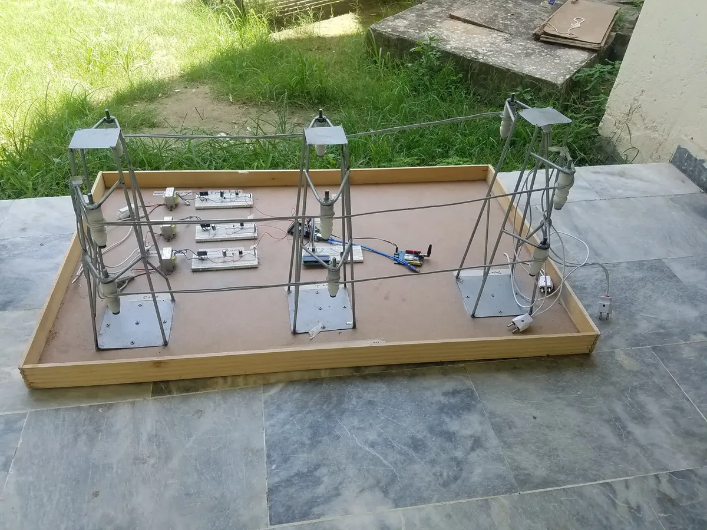

A physical scale model of a multi-tower electrical transmission line network with Arduino-based real-time monitoring and fault detection — built as an engineering demonstration platform.

This project is a fully functional scale model of an electrical power transmission infrastructure. The physical model includes multiple transmission towers constructed from metal, interconnected conductors, and an Arduino-based monitoring system that detects faults, measures line parameters, and triggers alerts.
The system was designed as an educational and demonstration tool for electrical engineering concepts — showcasing how real-world grid monitoring works in a compact, portable format.
The mechanical structure was fabricated using metal rods and a wooden base board, replicating the geometry of real transmission towers at scale. The electrical system uses low-voltage AC to safely simulate the transmission line, with current transformers and voltage dividers feeding the Arduino's analog inputs for parameter measurement.
When the Arduino detects an overcurrent or undervoltage condition on any segment, it triggers the corresponding relay to isolate that section and lights the fault indicator LED — mirroring how real grid protection schemes operate.